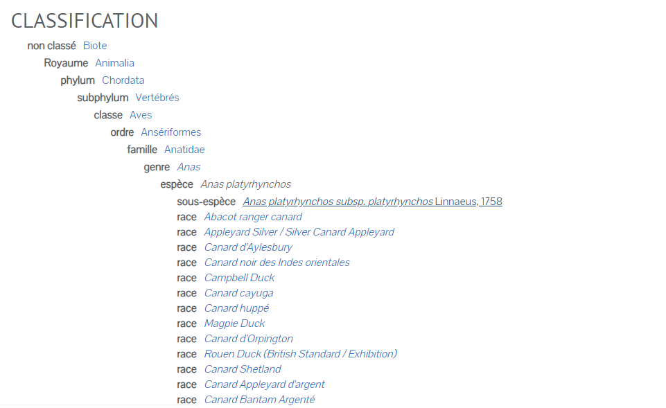

<div class="row">
            <div class="card">
                    
                    <div class="card-body">
                      <h5 class="card-title">{{ resource.description }}</h5>
                      <p>
                        Pour d'autres utilisations, voir Mallard (homonymie) . "Canard sauvage" redirige ici. Pour la pièce de Henrik Ibsen, voir The Wild Duck .
                        Le canard colvert ( / ˈmælɑːrd / ou / ˈmælərd / ) (Anas platyrhynchos) est un canard barboteur qui se reproduit dans les Amériques tempérées et subtropicales , en Eurasie et en Afrique du Nord, et a été introduit en Nouvelle-Zélande, en Australie, au Pérou, au Brésil, en Uruguay, en Uruguay et en Uruguay. , Chili, Colombie, îles Falkland et Afrique du Sud. Ce canard appartient à la sous - famille Anatinae de la famille des oiseaux aquatiques Anatidae. Les oiseaux mâles (drakes) ont la tête verte brillante et sont gris sur les ailes et le ventre, tandis que les femelles (poules ou canards) ont un plumage principalement tacheté de brun . Les deux sexes ont une superficie de plumes bleu noir bordées de blanc ou irisées appelé un spéculum sur leurs ailes; les mâles en particulier ont tendance à avoir des plumes bleues au spéculum. Le colvert a une longueur de 50 à 65 cm (20 à 26 po), dont le corps représente environ les deux tiers de la longueur. L'envergure est de 81–98 cm (32–39 po) et le bec est long de 4,4 à 6,1 cm (1,7 à 2,4 po). Il est souvent légèrement plus lourd que la plupart des autres canards barboteurs, pesant de 0,72 à 1,58 kg (1,6 à 3,5 lb). Les colverts vivent dans les zones humides , mangent des plantes aquatiques et de petits animaux, et sont des animaux sociauxpréférant se rassembler en groupes ou troupeaux de tailles variables. Cette espèce est le principal ancêtre de la plupart des races de canards domestiques .
                      </p>
                      <strong>Nom commun</strong>
                      <p>
                        Canard domestique préféré	
                        UKSI
                        Mallard préféré	
                        UKSI
                        Le canard colvert	
                        UKSI
                        Hwyaden Wyllt
                      </p>
                      
                      <p class="card-text"> </p>
                      <div class="row d-flex justify-content-around font-weight-bold">
                      </div>
                    </div>
                  </div>
</div>